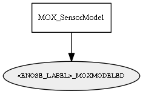

Global overview
All modules
All variables
All commands
Mission files
Pipelines
Variable: <ENOSE_LABEL>_MOXMODELED
Variable info:
Variable name
Short description
Who publishes it?
Who subscribes to it?
<ENOSE_LABEL>_MOXMODELED
The resulting GasSensor Observation after applying the MOX model.
MOX_SensorModel
Variable graph:

Detailed description:
The resulting GasSensor Observation after applying the MOX model.
Page generated by
Mooxygen 1.1.0
at Thu Jan 22 11:30:21 2015